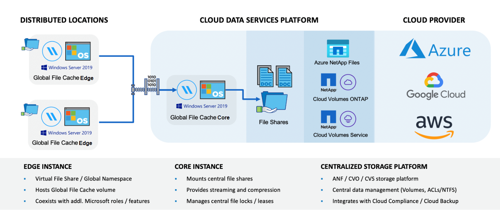

ドキュメントの変更をリクエスト
ドキュメントの変更をリクエスト GitHub で編集
GitHub で編集 寄稿者向けガイド
寄稿者向けガイドグローバルファイルキャッシュについて説明します
ネットアップのグローバルファイルキャッシュを使用すると、分散したファイルサーバのサイロをパブリッククラウドの 1 つの包括的なグローバルストレージ容量に統合できます。これにより、グローバルにアクセス可能なファイルシステムがクラウド内に作成され、すべてのリモートロケーションがローカルと同じように使用できるようになります。
概要
グローバル・ファイル・キャッシュを実装すると ' 分散ストレージ・アーキテクチャとは異なり ' 一元的なストレージ・フットプリントが 1 つになりますこのアーキテクチャでは ' ローカル・データ管理 ' バックアップ ' セキュリティ管理 ' ストレージ ' インフラストラクチャの各領域に必要となります

の機能
グローバルファイルキャッシュでは、次の機能を使用できます。
-
データをパブリッククラウドとに統合して一元管理できます エンタープライズクラスのストレージソリューションの拡張性とパフォーマンスを活用
-
グローバルなユーザ向けに単一のデータセットを作成し、インテリジェントなファイルキャッシングを活用して、グローバルなデータアクセス、コラボレーション、パフォーマンスを向上させます
-
自己維持型の自己管理キャッシュを利用して、データのコピーとバックアップを完全に排除できます。ローカルファイルキャッシュを使用してアクティブなデータをキャッシュし、ストレージをカット コスト
-
を使用したグローバルネームスペースを通じて、ブランチロケーションから透過的にアクセスできます リアルタイムのセントラルファイルロック
グローバルファイルキャッシュの機能と使用例について詳しくは、こちらをご覧ください "こちらをご覧ください"。
Global File Cache コンポーネント
グローバルファイルキャッシュは、次のコンポーネントで構成されています。
-
グローバルファイルキャッシュ管理サーバ
-
グローバルファイルキャッシュコア
-
Global File Cache Edge （リモートサイトに導入）
グローバルファイルキャッシュコアインスタンスは、選択したバックエンドストレージプラットフォーム（ Cloud Volumes ONTAP 、 Cloud Volumes Service 、 Azure NetApp Files ）を使用してグローバルファイルキャッシュファブリックを構築します。このファブリックを使用すると、非構造化データを単一のデータセットに統合し、パブリッククラウド内の 1 つまたは複数のストレージプラットフォームに格納できます。

サポートされているストレージプラットフォーム
グローバルファイルキャッシュでサポートされるストレージプラットフォームは、選択する導入オプションによって異なります。
導入の自動化オプション
グローバルファイルキャッシュは、 Cloud Manager を使用して導入される場合、次のタイプの作業環境でサポートされます。
-
Azure の Cloud Volumes ONTAP
-
AWS の Cloud Volumes ONTAP
この構成では、グローバルファイルキャッシュ管理サーバやグローバルファイルキャッシュコアなど、グローバルファイルキャッシュサーバ側の環境全体を Cloud Manager 内から導入して管理できます。
手動での導入オプション
グローバルファイルキャッシュ構成は、パブリッククラウドストレージインフラにインストールされた ONTAP 、 Cloud Volumes Service 、 Azure NetApp Files 、 Amazon FSX for Cloud Volumes ONTAP でもサポートされています。オンプレミスソリューションは、ネットアップの AFF プラットフォームと FAS プラットフォームでも利用できます。このインストールでは、 Cloud Manager ではなく、グローバルファイルキャッシュサーバ側のコンポーネントを手動で設定して導入する必要があります。
を参照してください "『 NetApp Global File Cache User Guide 』を参照してください" を参照してください。
グローバルファイルキャッシュの仕組み
グローバルファイルキャッシュは、アクティブなデータセットをグローバルにリモートオフィスにキャッシュするソフトウェアファブリックを作成します。その結果、ビジネスユーザは透過的なデータアクセスを保証し、グローバルな規模で最適なパフォーマンスを実現できます。

この例で使用されているトポロジは、ハブアンドスポークモデルで、リモートオフィス / ロケーションのネットワークからクラウド内の 1 つの共通データセットにアクセスします。この例の重要なポイントは次のとおりです。
-
一元化されたデータストア：
-
Cloud Volumes ONTAP などのエンタープライズパブリッククラウドストレージプラットフォーム
-
-
グローバルファイルキャッシュファブリック：
-
中央データストアをリモートロケーションに拡張します
-
Global File Cache Core インスタンス。企業のファイル共有（ SMB ）にマウントします。
-
各リモートロケーションで実行されているグローバルファイルキャッシュエッジインスタンス。
-
中央データへのアクセスを提供する、各リモートサイトに仮想ファイル共有を提供します。
-
インテリジェント・ファイル・キャッシュをカスタム・サイズの NTFS ボリューム（
D:\）でホストします
-
-
ネットワーク構成：
-
Multiprotocol Label Switching （ MPLS ）、 ExpressRoute 、または VPN 接続
-
-
お客様の Active Directory ドメインサービスとの統合。
-
グローバルネームスペースを使用するための DFS ネームスペース（推奨）。
コスト
グローバルファイルキャッシュの使用コストは、選択したインストールのタイプによって異なります。
-
すべてのインストール環境で、クラウド（ Cloud Volumes ONTAP 、 Cloud Volumes Service 、または Azure NetApp Files ）に 1 つ以上のボリュームを導入する必要があります。その結果、選択したクラウドプロバイダから料金が発生します。
-
すべてのインストールで、クラウドに 2 つ以上の仮想マシン（ VM ）を導入する必要もあります。その結果、選択したクラウドプロバイダから料金が発生します。
-
グローバルファイルキャッシュ管理サーバ：
Azure では、これは、 27GB のプレミアム SSD を搭載した D2S_V3 または同等の（ vCPU 2 基 / 8GB の RAM ） VM 上で実行されます
AWS では、 127GB の汎用 SSD を搭載した m4.large インスタンスまたは同等のインスタンス（ 2 vCPU / 8GB RAM ）で実行されます
-
グローバルファイルキャッシュコア：
Azure では、 D4s_V3 または 127GB の Premium SSD を搭載した同等の（ vCPU 4 基 / 16GB RAM ） VM で実行されます
AWS では、 127GB の汎用 SSD を搭載した m4.xlarge インスタンスまたは同等のインスタンス（ 4 vCPU / 16GB RAM ）で実行されます
-
-
Cloud Volumes ONTAP を使用して Azure または AWS （サポート対象の構成を Cloud Manager を通じて完全に導入）にインストールした場合、年間 3 、 000 ドル（ Global File Cache Edge インスタンスあたり）がサイトあたりで発生します。
-
手動導入オプションを使用してインストールした場合、価格は異なります。コストの概要を確認するには、を参照してください "節約の可能性を計算します" または、グローバルファイルキャッシュソリューションエンジニアに相談して、エンタープライズ環境に最適なオプションについて相談してください。
ライセンス
グローバルファイルキャッシュには、ソフトウェアベースのライセンス管理サーバ（ LMS ）が含まれています。これにより、ライセンス管理を統合し、自動化されたメカニズムを使用してすべてのコアインスタンスとエッジインスタンスにライセンスを導入できます。
データセンターまたはクラウドに最初のコアインスタンスを導入するときに、そのインスタンスを組織の LMS として指定することができます。この LMS インスタンスは一度設定され、 HTTPS 経由でサブスクリプションサービスに接続し、サブスクリプションの有効化時にサポート / 運用部門から提供されたカスタマー ID を使用してサブスクリプションを検証します。この指定を行ったら、お客様 ID と LMS インスタンスの IP アドレスを入力して、 Edge インスタンスを LMS に関連付けます。
追加の Edge ライセンスを購入するか、サブスクリプションを更新すると、サポート / 運用部門は、サイト数やサブスクリプションの終了日など、ライセンスの詳細を更新します。LMS がサブスクリプションサービスを照会すると、ライセンスの詳細が LMS インスタンスで自動的に更新され、 GFC Core インスタンスおよび Edge インスタンスに適用されます。
を参照してください "『 NetApp Global File Cache User Guide 』を参照してください" ライセンスの詳細については、を参照してください。
制限
Cloud Manager でサポートされているバージョンのグローバルファイルキャッシュでは、中央ストレージとして使用されるバックエンドストレージプラットフォームが、 Azure または AWS に Cloud Volumes ONTAP のシングルノードまたは HA ペアを導入している作業環境である必要があります。
他のストレージプラットフォームやクラウドプロバイダは、現時点では Cloud Manager を使用してサポートされていませんが、従来の導入手順を使用して導入することもできます。
その他の構成、たとえば、 Cloud Volumes Service または Cloud Volumes ONTAP を使用する Microsoft Azure 、 Google Cloud 、 AWS 上のグローバルファイルキャッシュは、従来の手順を使用して引き続きサポートされます。を参照してください "グローバルファイルキャッシュの概要とオンボーディング" を参照してください。